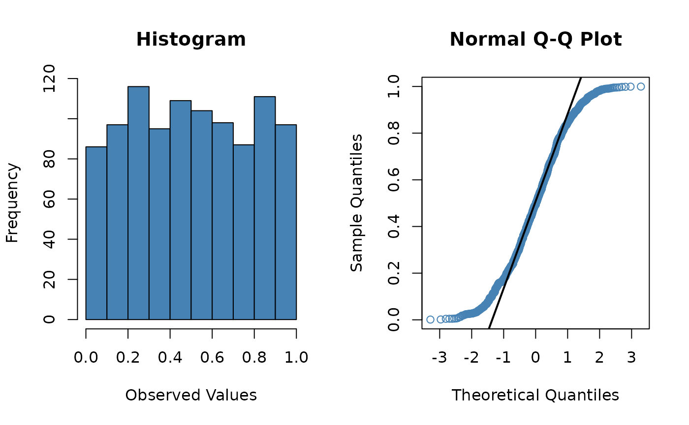
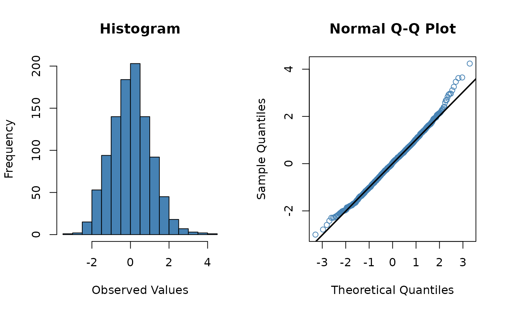
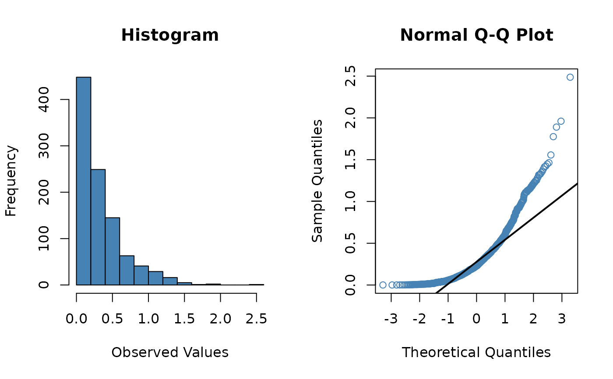

Check normality of a vector of values.
na.rmThis 'certestats' package supports a global default setting for na.rm in many mathematical functions. This can be set with options(na.rm = TRUE) or options(na.rm = FALSE).
For normality(), quantile() and IQR(), this also applies to the type argument. The default, type = 7, is the default of base R. Use type = 6 to comply with SPSS.
x <- runif(1000)
normality(x)

#> # A tibble: 4 × 5
#> statistic p.value method interpretation suggest
#> <dbl> <dbl> <chr> <chr> <chr>
#> 1 0.958 2.20e- 16 Shapiro-Wilk normality test Not normally … NA
#> 2 0.500 8.72e-218 Asymptotic one-sample Kolmogorov-… Not normally … NA
#> 3 0.0585 NA Skewness 0 in normal d… NA
#> 4 1.84 NA Kurtosis 3 in normal d… NA
x <- rnorm(1000)
normality(x)

#> # A tibble: 4 × 5
#> statistic p.value method interpretation suggest
#> <dbl> <dbl> <chr> <chr> <chr>
#> 1 0.998 0.551 Shapiro-Wilk normality test Normally dist… (as is)
#> 2 0.0208 0.782 Asymptotic one-sample Kolmogorov-Smi… Normally dist… (as is)
#> 3 0.0371 NA Skewness 0 in normal d… NA
#> 4 3.29 NA Kurtosis 3 in normal d… NA
x <- rexp(1000, rate = 3)
normality(x)

#> # A tibble: 4 × 5
#> statistic p.value method interpretation suggest
#> <dbl> <dbl> <chr> <chr> <chr>
#> 1 0.845 3.82e- 30 Shapiro-Wilk normality test Not normally … NA
#> 2 0.500 9.05e-218 Asymptotic one-sample Kolmogorov-… Not normally … NA
#> 3 1.71 NA Skewness 0 in normal d… NA
#> 4 7.07 NA Kurtosis 3 in normal d… NA